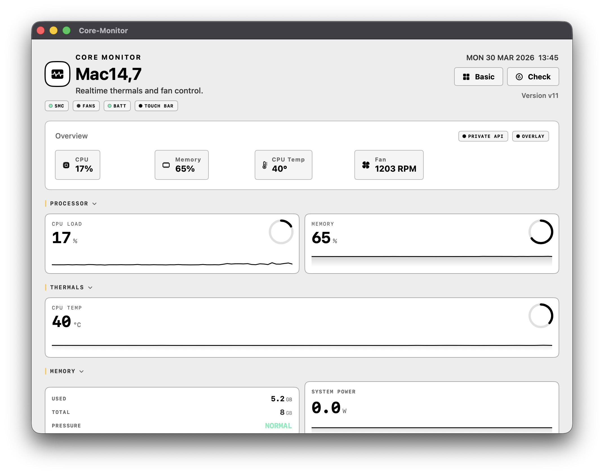
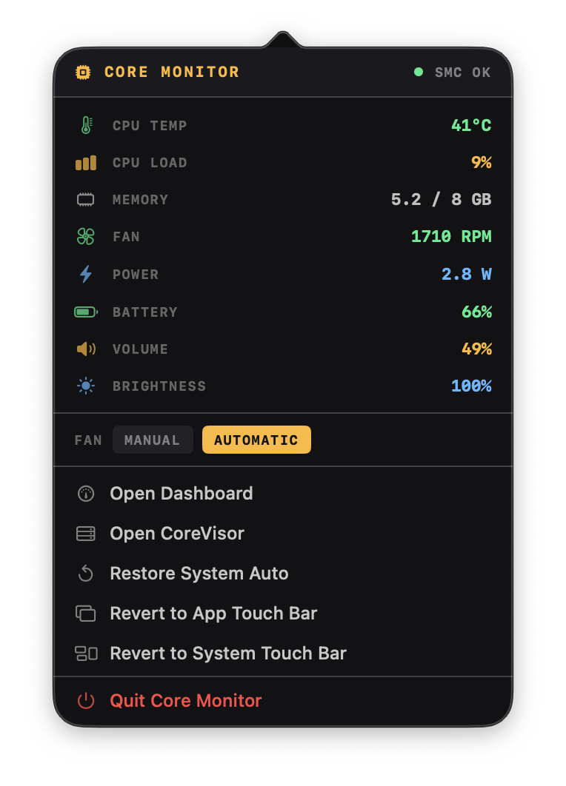
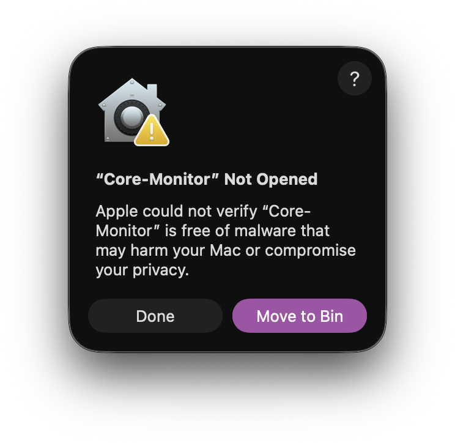
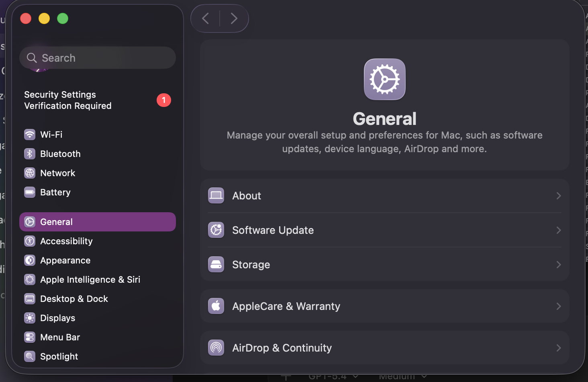
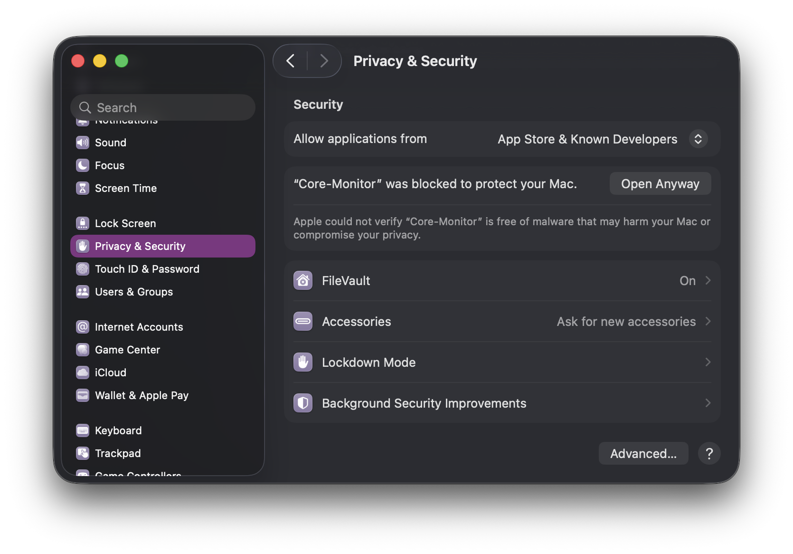
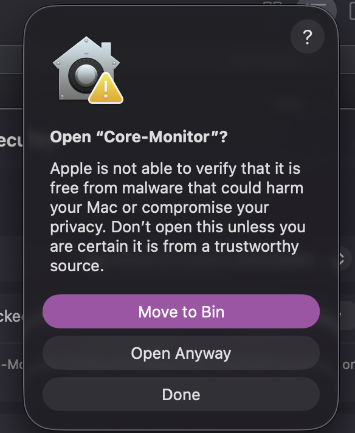

1. Download
Grab the latest release directly from GitHub.
The download button always points at the newest published release, so you do not need to hunt around the repository.
Download Latest ReleaseOpen-source macOS control center
Core-Monitor combines live system monitoring, real fan control, menu bar stats, a persistent Touch Bar HUD, built-in benchmarking, and CoreVisor virtualization in one native Swift app.
What it replaces
Why it is different
Most Mac utilities solve one layer of the problem. Core-Monitor connects system telemetry, fan control, Touch Bar visibility, benchmarking, and VM workflows in the same app.
Install
1. Download
The download button always points at the newest published release, so you do not need to hunt around the repository.
Download Latest Release2. First launch
Core-Monitor is not signed with a paid Apple Developer certificate, so macOS may block first launch until you press Open Anyway in Privacy & Security.
See Gatekeeper steps3. Unlock the advanced parts
Fan writes use the helper path when needed, launch-at-login needs standard macOS approval, and Windows 11 ARM workflows in CoreVisor need swtpm.
UI


Features
CPU activity, Apple silicon E-core and P-core awareness, memory pressure, thermal readings, power, battery state, and fan RPM in one native UI.
SMC-backed helper flow, hardware-aware fan mode handling, profiles, and wake re-apply behavior instead of a fake read-only monitor.
A persistent Touch Bar stats surface driven by reverse-engineered presentation behavior so the hardware stays useful beyond the foreground app.
Sustained benchmark runs with thermal context, quality ratings, local leaderboard storage, and fan-condition awareness.
At-a-glance status and quick controls for the moments where opening a full dashboard would be overkill.
Built-in virtualization workflows with Apple Virtualization and QEMU, plus a guided Windows 11 ARM path instead of a separate VM app.
First-run checklist
Launch Core-Monitor from the downloaded release or from Xcode if you built from source.
If macOS blocks first launch, use the documented Open Anyway flow once. After that, the app launches normally.
You can browse monitoring features without the helper, but fan writes and deeper hardware interaction depend on that path being available.
Core-Monitor supports launch-at-login through normal macOS login item approval instead of custom weirdness.
swtpm for Windows 11 ARM in CoreVisorThe advanced Windows workflow expects TPM support. CoreVisor points you toward brew install swtpm when it is missing.
Benchmark results stay local, letting you compare your own machines and repeated runs with thermal context attached.
Walkthrough
If you want the shortest path from download to running app, the recorded install walkthrough shows the expected first-run flow and what macOS is going to ask you.
Gatekeeper




CoreVisor
CoreVisor is what turns Core-Monitor from a good system utility into a broader Mac control center. Virtual machines stress the exact things the app already understands: CPU load, memory pressure, thermals, fan behavior, and power.
Instead of making you jump into another frontend, CoreVisor keeps monitoring and workload management in the same place.
Linux workflows can use Apple Virtualization while broader guest support runs through QEMU-backed paths.
Guided setup for Windows 11 ARM with ISO prep, VirtIO handling, TPM support, and a much friendlier path than hand-building commands.
CoreVisor is not just a launch button. It includes practical VM workflows for repeatable testing and real use.
Ready to try it?